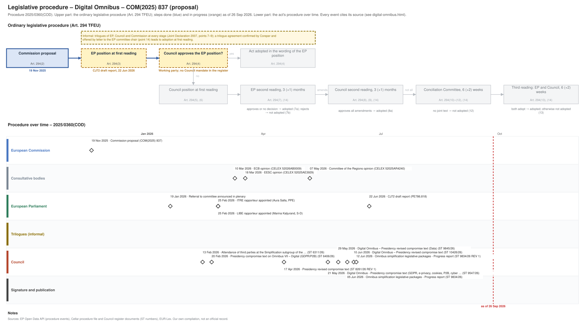

← All procedures · Regulation timeline
Procedure 2025/0360(COD), ongoing, as of 26 Sep 2026. Drawing: SVG · PNG · PDF (A3) · draw.io · Page as Markdown: digital-omnibus.md
| Stage | EP committee stage |
|---|---|
| Parliament | draft report 22 Jun 2026 |
| Council | working party, latest document 21 Sep 2026 |
| Latest activity | 21 Sep 2026 · Council: AOB item for the meeting of the General Affairs Council of 22 September 2026 … (ST 13399/26) |
| Next steps | EP: amendments and committee vote on the report and mandate; Council: working party towards a negotiating mandate |

| Date | Actor | Event | Document | Source |
|---|---|---|---|---|
| 2025-11-19 | European Commission | Commission proposal (Art. 294(2) TFEU) | COM(2025) 837 | Cellar (CELEX 52025PC0837) |
| 2026-01-19 | European Parliament | Referral to committee announced in plenary | EP Open Data API, procedure 2025-0360 (REFERRAL) | |
| 2026-02-13 | Council | Attendance of third parties at the Simplification subgroup of the … | ST 6311/26 | Cellar procedure file 2025/360 (Council register) |
| 2026-02-20 | Council | Presidency compromise text on Omnibus VII – Digital (GDPR/P2B) | ST 6406/26 | Cellar procedure file 2025/360 (Council register) |
| 2026-02-25 | European Parliament | ITRE rapporteur appointed (Aura Salla, PPE) | EP Open Data API, procedure 2025-0360 (participation RAPPORTEUR) | |
| 2026-02-25 | European Parliament | LIBE rapporteur appointed (Marina Kaljurand, S-D) | EP Open Data API, procedure 2025-0360 (participation RAPPORTEUR) | |
| 2026-03-10 | Consultative bodies | ECB opinion | CELEX 52026AB0009 | Cellar procedure file 2025/360 |
| 2026-03-18 | Consultative bodies | EESC opinion | CELEX 52025AE3929 | Cellar procedure file 2025/360 |
| 2026-04-17 | Council | Presidency revised compromise text | ST 8261/26 REV 1 | Cellar procedure file 2025/360 (Council register) |
| 2026-05-07 | Consultative bodies | Committee of the Regions opinion | CELEX 52025AR4240 | Cellar procedure file 2025/360 |
| 2026-05-21 | Council | Digital Omnibus - Presidency compromise text (GDPR, e-privacy, cookies, P2B, cyber … | ST 9547/26 | Cellar procedure file 2025/360 (Council register) |
| 2026-05-29 | Council | Digital Omnibus – Presidency revised compromise text (Data) | ST 9845/26 | Cellar procedure file 2025/360 (Council register) |
| 2026-06-05 | Council | Omnibus simplification legislative packages - Progress report | ST 9834/26 | Cellar procedure file 2025/360 (Council register) |
| 2026-06-10 | Council | Digital Omnibus – Presidency revised compromise text | ST 10426/26 | Cellar procedure file 2025/360 (Council register) |
| 2026-06-12 | Council | Omnibus simplification legislative packages - Progress report | ST 9834/26 REV 1 | Cellar procedure file 2025/360 (Council register) |
| 2026-06-22 | European Parliament | CJ72 draft report | PE786.818 | EP Open Data API, procedure 2025-0360 (COMMITTEE_TABLING_REPORT) |
| Date | Document | Kind | Subject |
|---|---|---|---|
| 2025-11-20 | ST 15698/25 | council-transmission | Proposal for a REGULATION OF THE EUROPEAN PARLIAMENT AND OF THE COUNCIL amending Regulations (EU) 2016/679, (EU) 2018/1724, (EU) 2018/1725, (EU) 2023/2854 and … |
| 2025-11-20 | ST 15698/25 ADD 1 | council-transmission | ANNEXES to the proposal for a REGULATION OF THE EUROPEAN PARLIAMENT AND OF THE COUNCIL amending Regulations (EU) 2016/679, (EU) 2018/1724, (EU) 2018/1725, (EU) … |
| 2025-11-20 | ST 15698/25 ADD 2 | council-transmission | COMMISSION STAFF WORKING DOCUMENT Accompanying the documents Proposal for a REGULATION OF THE EUROPEAN PARLIAMENT AND OF THE COUNCIL Amending Regulations (EU) … |
| 2025-12-01 | WK 16586/25 | council-note | Digital Omnibus – Presentation by the Commission (AGS on 1 December) |
| 2025-12-04 | ST 16131/25 REV 1 | council-note | Simplification a) 2025 Annual Overview Report b) Annual Progress Reports - Presentation by the Commission - Exchange of views |
| 2025-12-15 | WK 17297/25 | council-note | Digital Omnibus – Presentation by the Commission (AGS on 12 December) |
| 2026-01-09 | WK 250/26 | council-note | Presidency discussion note for the AGS on 16 January 2026 |
| 2026-01-09 | WK 252/26 | council-note | Priorities and work programme of the Cyprus Presidency - Presentation by the Presidency (AGS on 9 January 2026) |
| 2026-01-16 | WK 448/26 | council-note | Digital Omnibus – Presentation by the Commission (AGS on 16 January 2026) |
| 2026-02-06 | WK 2045/26 | council-note | Presidency discussion note for the AGS on 13 February 2026 |
| 2026-02-09 | WK 2134/26 | council-note | Digital Omnibus – Presentation by the Commission (AGS on 13 February 2026) |
| 2026-02-13 | ST 6311/26 | council-item-note | Attendance of third parties at the Simplification subgroup of the Antici Group on 27 February 2026 - Approval |
| 2026-02-13 | WK 2399/26 | council-note | Follow-up to the AGS of 13 February – Presentation by the Commission on cybersecurity issues |
| 2026-02-20 | ST 6406/26 | council-compromise | Presidency compromise text on Omnibus VII – Digital (GDPR/P2B) |
| 2026-02-20 | WK 2800/26 | council-note | explanatory note of the Presidency compromise text – AGS meeting on 27/02/2026 |
| 2026-02-20 | WK 2802/26 | council-note | Presidency discussion note on GDPR - AGS 27.02.26 |
| 2026-02-20 | WK 2859/26 | council-note | EDPB-EDPS Joint opinion on the Digital Omnibus |
| 2026-03-10 | CELEX 52026AB0009 | opinion | Opinion of the European Central Bank of 10 March 2026 on a proposed regulation as regards the simplification of the digital legislative framework (Digital … |
| 2026-03-11 | ST 7244/26 | council-transmission | European Central Bank/ ECB Opinion |
| 2026-03-11 | WK 3735/26 | council-note | Drafting suggestions on the Commission proposal on Cyber and data issues (deadline 27.02 extension to 6.03.26) |
| 2026-03-11 | WK 3735/26 ADD 1 | council-note | Drafting suggestions on the Commission proposal on Cyber and data issues (deadline 27.02 extension to 6.03.26) - additional comments from CZ & NL |
| 2026-03-12 | WK 3735/26 ADD 2 | council-note | Drafting suggestions on the Commission proposal on Cyber and data issues (deadline 27.02 extension to 6.03.26) - additional comments from EE |
| 2026-03-18 | CELEX 52025AE3929 | opinion | Opinion of the European Economic and Social Committee a) Proposal for a Regulation of the European Parliament and of the Council amending Regulations (EU) … |
| 2026-03-18 | WK 3735/26 ADD 3 | council-note | Drafting suggestions on the Commission proposal on Cyber and data issues (deadline 27.02 extension to 6.03.26) - additional comments from AT |
| 2026-03-19 | WK 3736/26 | council-note | Consultation on Omnibus VII (GDPR/P2B/ePrivacy) digital rules - related to AGS meeting of 27.02.26 (deadline 18.03.26) - first compiled comments: CZ, DE , EE, … |
| 2026-03-19 | WK 3736/26 ADD 1 | council-note | Consultation on Omnibus VII (GDPR/P2B/ePrivacy) Digital rules - related to AGS meeting of 27.02.26 (deadline 18.03.26) - consolidated written comments on … |
| 2026-03-19 | WK 3736/26 ADD 2 | council-note | Consultation on Omnibus VII (GDPR/P2B/ePrivacy) Digital rules - related to AGS meeting of 27.02.26 (deadline 18.03.26) - consolidated written comments on … |
| 2026-03-23 | WK 3735/26 ADD 4 | council-note | Drafting suggestions on the Commission proposal on Cyber and data issues (deadline 27.02 extension to 6.03.26) - additional comments from DK (Cyber only) |
| 2026-03-23 | WK 3736/26 ADD 3 | council-note | Consultation on Omnibus VII (GDPR/P2B/ePrivacy) Digital rules - related to AGS meeting of 27.02.26 (deadline 18.03.26) - consolidated written comments on … |
| 2026-04-17 | ST 8261/26 REV 1 | council-compromise | Presidency revised compromise text |
| 2026-04-17 | WK 5494/26 | council-note | Explanatory note accompanying the Presidency compromise text (AGS meeting on 24 April 2026) |
| 2026-04-23 | WK 5822/26 | council-note | Non-paper SPAIN: amending Article 49 of the GDPR in relation to the exchange of tax data (Omnibus VII-Digital Omnibus) |
| 2026-04-24 | WK 5890/26 | council-note | Follow-up to the AGS of 24 April 2026 - Presentation of the European Central Bank |
| 2026-04-30 | WK 6156/26 | council-note | Explanatory note on Cyber and Data accompanying the Presidency’s revised compromise text |
| 2026-05-07 | CELEX 52025AR4240 | opinion | Opinion of the European Committee of the Regions – Digital simplification and Data Union Strategy |
| 2026-05-21 | ST 9547/26 | council-compromise | Digital Omnibus - Presidency compromise text (GDPR, e-privacy, cookies, P2B, cyber provisions) |
| 2026-05-22 | WK 7178/26 | council-note | Explanatory note by the Presidency - AGS meeting on 27 May 2026 |
| 2026-05-29 | ST 9845/26 | council-compromise | Digital Omnibus – Presidency revised compromise text (Data) |
| 2026-06-04 | ST 9773/26 REV 1 | council-note | Guidance for further work |
| 2026-06-05 | ST 9834/26 | council-progress-report | Omnibus simplification legislative packages - Progress report |
| 2026-06-10 | ST 10426/26 | council-compromise | Digital Omnibus – Presidency revised compromise text |
| 2026-06-11 | WK 8070/26 | council-note | Presidency note - AGS meeting on 15 June 2026 |
| 2026-06-12 | ST 9834/26 REV 1 | council-progress-report | Omnibus simplification legislative packages - Progress report |
| 2026-06-22 | PE786.818 | ep-draft-report | DRAFT REPORT on the proposal for a regulation of the European Parliament and of the Council amending Regulations (EU) 2016/679, (EU) 2018/1724, (EU) 2018/1725, … |
| 2026-06-26 | ST 11036/26 | council-note | Simplification: state of play and future orientation - Exchange of views |
| 2026-07-09 | WK 10233/26 | council-note | Presidency Discussion Note |
| 2026-07-13 | ST 11036/26 COR 1 | council-note | Simplification: state of play and future orientation - Exchange of views |
| 2026-09-10 | ST 12955/26 | council-note | AOB item for the meeting of the General Affairs Council on 22 September 2026 Omnibus simplification packages: state of play - Information from the Presidency |
| 2026-09-21 | ST 13399/26 | council-note | AOB item for the meeting of the General Affairs Council of 22 September 2026 Simplification - Information from Austria |
{kind=link}
{kind=link}